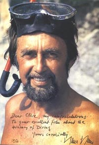

|
|
HANS HASS & OXYGEN REBREATHER - REG VALLINTINE

HANS HASS (b.1919)
Just before the War another great pioneer of autonomous diving, Hans Hass, was on expedition to the West Indies and the first book of his to be published in English was Diving to Adventure. A wonderful book that I recommend everybody to have. Hass was using oxygen apparatus and breath holding to film sharks and fish in the West Indies and later in the Red Sea:
“You put the goggles on so that you can see underwater. You move your legs as if you are crawling, only quite slowly... don’t splash at the same time otherwise all the fish will swim away.”
“Where then is this Curaçao?”
“...Here are the Lesser Antilles and here in the Caribbean Sea is Curaçao.”
Pirsch unter Wasser (Hunting Underwater) HANS HASS, 1939
Caribbean Sea off Bonaire & Curaçao
“We are drawn into this secret world. We want to meet its dangers, hear its mystical tales and see its beauty. It is a wonderful fairyland, everywhere it shines red and green between the colourful corals. Everywhere there is life a thousand fold.
Unfortunately we have to go up again to grab some fresh air. However, we don’t stay long. Soon we are descending again into our hunting ground: the deep sea. Strange shapes these corals have. Like fairy-tale mountains the high brain corals, 2 or 3m high.
I came upon a shoal of blue mackerel floating against the bank. And here is a shoal of the rare Southern Sennet which are near relations to the so feared Barracudas. We were seeking danger and beauty and we have found it in excess.
So we lived then for eight months like fish in the world of fish, exploring in this new way a strange world.
Hans Hass speaking in person:
Menschen unter Haien (Men Amongst Sharks) HANS HASS, 1942
“In the following year, 1939, we three students made an expedition from Vienna to the Caribbean Sea. Perhaps you remember our reports at that time? We lived for months on a small island; a real Robinson Crusoe-like life - most of it underwater.
We then met sharks for the first time and learnt how to swim towards these feared wild beasts, without any weapons, and how to ward them off.
From this adventurous sport which we developed for youthful fun, came some serious research and scientific breakthroughs.
Ladies and Gentlemen, there are many beautiful and mysterious places in the world, but the most beautiful and secretive of all is the sea. It does not matter whether it streams on a shimmering hot summer’s day with beautiful spots of foam over the rocks, or the wind blows over it and raises angry white froth on the waves, or whether it lies there quite still as if it were dead, the sea is always beautiful and secretive.
Secretive because underneath these immense waves there is a secret land, the last which man has not yet succeeded in conquering.
Ægean Sea
At this time I had a further exhilarating experience as I tried out my new swimming gear. This small apparatus is in many ways similar to the escape gear used in U-boats. It brought us the fulfilment of our most precious wish... Namely to remain longer underwater and to dive deeper but not to lose our ability to swim freely - as we would in a diving suit or helmet.
There is, however, a limit to diving into the deep as we breathe pure oxygen and the scientists say that below the pressure of 2 atmospheres gauge that is a water depth of nearly 20m, pure oxygen is poisonous for man.
But everything was clear and Xenophon gave me my camera which I secured with a hook to a strap around my neck and then we plunged into the depths. I let myself drop 10m, it was a wonderful feeling being able to move, without any anxiety, completely freely.
Now I had become an amphibious being and could go along in the same way as the fish. I could hover, sit, turn, kneel or lie down. I could even have stood on my head. We could study the animals in their natural world as we swam like fishes amongst them. And then this slimy body glided with its long tentacles over the sea floor, obviously seeking to find a protective hole.
I could watch everything from nearby and I filmed the conclusion in slow motion. And now the fisherman has pulled the octopus upwards and is drawing him higher, despite all his resistance. I send congratulations up above, then I tear myself away because today I have a special plan.
25m deep it is already darker. Swarms of fish accompany me. The animals show no fear. I push myself up from the sea bottom and float the last few metres upwards so as to enjoy it fully. Now that the competence of logical thought had again returned to me it was clear that I had dived fully 35m deep with pure oxygen and that this had not caused me any harm.
I personally investigated the growth of some of the rocks taken from the sea floor. These, here, are corals, but not the animals themselves, rather the cups in which they sit - the calcium skeletons which have been left behind by them, from whose shape one knows the individual type - whose branches are either disordered or already lie in an ordered way or create net-like pictures like ‘Reterapora’.
Nature is rich in wonders and the more one knows about its precise mechanism, the more one would like to know. It was indescribable, wherever I turned the camera were sharks. I suddenly noticed a shark whose attitude appeared to me suspicious. He had already swum in circles several times, then suddenly he seemed to make a decision and came straight towards me... just as water got into my mask.
I was completely helpless, I could not see anything, luckily Heinz came to my help, he diverted the shark. He shouted at him, but the shark did not notice. Then he shouted several times more and stronger but without success. The shark did not attack, but the shouting had not frightened him at all. And now it was absolutely clear to me that of course sharks who are used to dynamite explosions cannot be frightened by the shouting of a man.
So we lived there several days, down among the sharks and studied the animals at close range. How little man knows about the deeps of the seas, for the boundless waves spread themselves like a veil covering its many wonders and mysteries.
And if one travels in a ship above one is not aware of the unknown and secret beautiful land which stretches out underneath. And so our adventurous expedition came to an end and we returned to our homeland with many boxes of valuable collections, but above all rich in new experiences.”
|
|